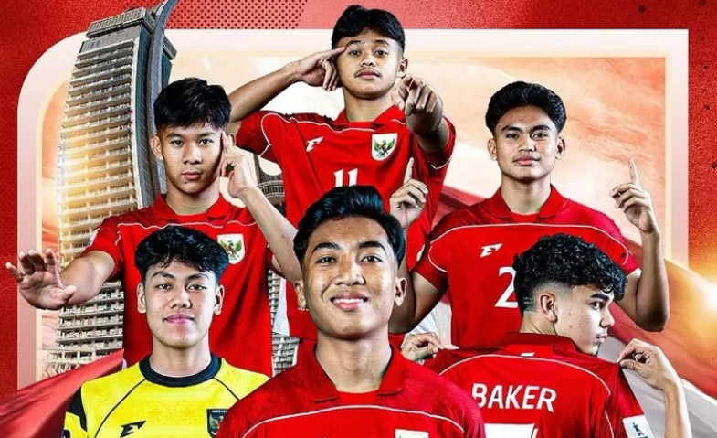

Pengantar
Selamat datang di website profil sederhana saya.
Website ini dibuat untuk latihan HTML & CSS dasar.
Situs ini berisi biodata, hobi, dan cita-cita saya sebagai siswa HSI Boarding School Purworejo.
Silakan jelajahi tautan navigasi di atas untuk mengenal saya lebih dekat.
Minat Saya

Saya memilih gambar di atas karena karakter tersebut melambangkan semangat,
memberi motivasi, dan mewakili hobi saya .
Gambar ini juga sederhana, tidak terlalu berlebihan,
tetapi tetap menarik untuk dilihat.